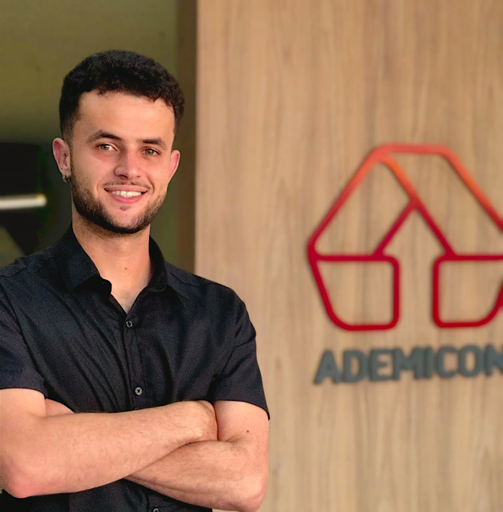

Você participa
Você escolhe um plano e paga as contribuições previstas no contrato.
Consórcio Ademicon · Guia Completo
Do primeiro passo à utilização do crédito. Um guia para você entender o consórcio sem complicação.

No consórcio, pessoas contribuem para um grupo organizado por uma administradora. Os recursos do grupo viabilizam créditos para os participantes contemplados.
Você escolhe um plano e paga as contribuições previstas no contrato.
Parte dos pagamentos forma o fundo comum, destinado aos créditos do grupo.
Ao ser contemplado, o participante inicia os procedimentos para utilizar seu crédito.
Este é o caminho básico. Cada etapa tem uma função.
As contribuições alimentam os recursos do grupo conforme o contrato.
São realizadas contemplações por sorteio e lance, conforme regras e recursos disponíveis.
Após os procedimentos exigidos, a administradora paga o fornecedor do bem ou serviço.
Veja o caminho desde a escolha do plano até a realização do seu objetivo.
O que você quer conquistar? A partir disso, você escolhe um crédito, um prazo e um compromisso que façam sentido para seu orçamento.
Objetivo e orçamento alinhadosAntes de contratar, confira as condições. Depois da formalização, você tem uma cota e passa a seguir o calendário do seu plano.
Seu plano começa aquiCom as obrigações em dia, você participa conforme as regras do grupo. Pode concorrer por sorteio e avaliar uma oferta de lance.
Acompanhamento do grupoSua cota foi contemplada por sorteio ou lance. Agora começa a preparação para utilizar sua carta de crédito.
Foi por lance? Confirme o resultado e siga as orientações para pagar o lance vencedor no prazo previsto.
Com orientação, reúne os documentos e indica o bem ou serviço. A administradora analisa a operação e as garantias exigidas.
Preparação para usar o créditoCom os requisitos atendidos, a administradora realiza o pagamento ao fornecedor. Seu planejamento se transforma em uma compra.
Objetivo realizadoConsórcio não tem juros de financiamento, mas tem custos. O importante é conhecer o que você paga e como o plano é atualizado.
Representação conceitual, sem proporções de um plano real. *Quando previstos no contrato.
Forma os recursos para os créditos do grupo.
Remunera a organização e a gestão do grupo ao longo do plano.
Atende às finalidades definidas no contrato e na regulamentação.
Confira existência, cobertura, cobrança e despesas aplicáveis ao seu plano.
A contemplação dá o direito ao crédito. A utilização depende das etapas e condições previstas para o seu plano.
Você concorre pelo método previsto no grupo, com as obrigações em dia.
Não precisa ofertar lance para concorrer.
Você oferece uma antecipação de pagamentos para disputar uma contemplação.
Uma possibilidade de antecipar. Não uma promessa de data.
Com o passar do tempo, à medida que o grupo arrecada mais e tem mais recursos disponíveis, pode contemplar mais participantes em uma mesma assembleia. Assim, as contemplações não ficam restritas a uma pessoa por mês.
Exemplo conceitual, não representa um grupo real.
Recursos próprios e lance embutido explicam a origem do dinheiro. Livre, fixo, limitado e fidelidade explicam as formas de disputa.
No lance próprio, você usa uma reserva sua. Se vencer, o pagamento antecipa parcelas e reduz o saldo a pagar, conforme o contrato.
O lance vem de fora da carta. Ele não é retirado dela.
No lance embutido, quando permitido, parte do crédito é usada para antecipar pagamentos. Por isso, sobra menos crédito para comprar.
Desenho conceitual, sem representar um percentual disponível.
Pense em uma disputa parecida com um leilão.
Você escolhe quanto oferecer, respeitando as regras do grupo. As maiores ofertas têm prioridade para contemplação.
Quem tiver o lance vencedor precisa pagar no prazo previsto. Havendo recursos, mais de um participante pode ser contemplado por lance na mesma assembleia.
Exemplo conceitual. A classificação considera a base e os critérios do grupo.
O percentual já está definido.
Os participantes oferecem o percentual previsto para essa modalidade. Não é uma disputa para ver quem oferece mais.
Se houver mais ofertas iguais do que vagas para contemplação, o desempate considera a proximidade do número de cada cota com o número sorteado naquele mês no grupo.
Ofertas iguais. A classificação segue o regulamento do grupo.
Aqui, a oferta tem um teto.
Existe um percentual máximo permitido. As ofertas dessa disputa não ultrapassam esse limite.
Se vários participantes oferecerem o lance no percentual máximo permitido e não houver recursos para contemplar todos, o desempate considera a proximidade do número de cada cota com o número sorteado naquele mês no grupo.
Linha tracejada: limite. Confira o teto disponível e a ordem de proximidade prevista no regulamento.
Pontualidade que abre uma nova oportunidade.
Após o período exigido, quem cumpre os requisitos de pagamentos em dia pode disputar essa modalidade, quando disponível.
A disputa fica restrita às cotas habilitadas: uma forma de reconhecer o histórico de participação e pontualidade.
O tempo mínimo e os requisitos seguem o regulamento.
Não é uma taxa extra para comprar a contemplação. Ele reduz as obrigações do plano, com efeito sobre prazo ou parcela conforme o contrato.
Pode ser uma alternativa nas hipóteses permitidas, dependendo das regras do FGTS, do imóvel, do titular e do plano.
Modalidades, limites, base de cálculo e combinação de recursos dependem do grupo e do contrato.
A atualização busca preservar seu poder de compra ao longo do plano, acompanhando a variação do índice contratado.
Referências dos planos apresentados neste atendimento. Outros bens móveis: índice confirmado pelo consultor para o grupo comercializado. INCC: Índice Nacional de Custo da Construção. INPC: Índice Nacional de Preços ao Consumidor.
O crédito e as obrigações são atualizados pela regra do plano. O acréscimo no saldo a pagar é distribuído nas parcelas restantes, em vez de ser cobrado todo de uma vez. Isso ajuda a diluir o impacto do reajuste na parcela.
■ Diferença distribuída no prazo restante. Desenho conceitual: o impacto por parcela depende do índice, do saldo, do prazo restante e das condições do plano.
Você conta com orientação para organizar a documentação e concluir a operação.
Envie os documentos. A administradora analisa a capacidade de pagamento e as garantias exigidas.
Indique o bem ou serviço da categoria contratada. A operação e o fornecedor passam pelas verificações necessárias.
Cumpridas as exigências, a administradora paga diretamente ao fornecedor do bem ou serviço.
A utilização respeita a categoria e as condições do plano contratado. Conheça os quatro segmentos.
Compra de imóvel ou terreno, construção e reforma, conforme o plano. Pode haver quitação total de financiamento de sua titularidade e da mesma categoria, nas condições aplicáveis.
Carros, motos, caminhões e outros veículos elegíveis, respeitando os critérios de avaliação e as exigências do plano.
Uma alternativa para empresas e produtores: maquinário industrial, máquinas e implementos agrícolas, equipamentos para produção e expansão do negócio, conforme a elegibilidade do grupo.
Projetos como estudos, viagens, eventos e outros serviços elegíveis, conforme a contratação e a documentação para pagamento ao prestador.
Além de utilizar o crédito, o titular pode avaliar a venda da cota. O Contemplay é uma ferramenta de apoio à negociação de cotas contempladas no atendimento autorizado.
O ponto principal não é apenas o valor da oferta: é comparar o que você receberá com tudo o que desembolsou para chegar até ali.
No atendimento pelo Contemplay, você pode solicitar uma proposta para sua cota contemplada, sem precisar procurar um comprador por conta própria.
É a referência comercial apresentada pelo consultor para avaliação de compra da cota. A proposta depende da análise, do crédito disponível e das condições da negociação. Não é um percentual fixo nem compromisso de compra da Ademicon.
São situações que podem preservar mais a sua reserva e ampliar a oportunidade de resultado positivo. As parcelas pagas até a contemplação continuam fazendo parte do seu desembolso.
Nesta negociação, as despesas de transferência ficam com o comprador. Após a venda e a transferência aprovada, ele assume as obrigações restantes da cota, e você recebe o valor negociado. Eventual tributação sobre ganho de capital é uma obrigação fiscal do vendedor e deve ser verificada conforme sua situação.
Pode ser uma alternativa econômica ao financiamento. A comparação deve considerar o valor inicial, o crédito disponível, o saldo e o custo total de cada opção.
Aqui, o financiamento é apenas uma referência para entender a proposta do consórcio que eu trabalho com você. Veja o que muda na prática.
No uso comum, o consórcio é um projeto de médio ou longo prazo. A compra acontece após a contemplação e os procedimentos de utilização.
O financiamento permite comprar após a aprovação e a contratação do crédito. Esse acesso depende da análise da instituição, não é automático.
Além do valor destinado ao crédito, há taxa de administração, reajustes anuais e os demais componentes previstos no contrato, quando aplicáveis. Isso pode tornar o consórcio uma alternativa mais econômica para quem consegue planejar.
O cliente devolve o valor financiado e paga juros e demais custos. Dependendo da taxa e do prazo, esses encargos podem aumentar significativamente o total pago.
As ilustrações mostram a composição, não uma proporção de custos. No financiamento, compare o Custo Efetivo Total (CET); no consórcio, considere também os reajustes e todos os componentes do plano.
Crédito e prazo devem fazer sentido no seu orçamento. A contemplação não tem data individual garantida, e a utilização também passa por análise e exigências do plano.
Perfil de crédito, renda e capacidade de pagamento influenciam a aprovação e as condições. Entrada, prestação, prazo e custo final variam conforme a instituição e a operação.
Se o seu objetivo permite planejamento, o consórcio merece uma análise. Vamos olhar seu momento e as condições do plano para escolher com consciência.
Analisar meu momento com o LeandroToque nas perguntas para aprofundar. Se preferir, fale diretamente comigo pelo WhatsApp.
Não. Você pode ser contemplado por sorteio, sem ofertar lance, desde que cumpra as condições de participação. O lance é uma alternativa adicional.
Não. Antecipar pagamentos ou quitar o plano não substitui a contemplação. O acesso ao crédito depende de sorteio ou lance e dos demais requisitos aplicáveis.
Não há data individual garantida. O grupo tem prazo e planejamento, mas isso não permite prometer o mês da contemplação de uma pessoa.
Na compra, a administradora paga diretamente ao fornecedor após os procedimentos exigidos. Receber em dinheiro é uma hipótese específica: após 180 dias da contemplação, se o crédito não tiver sido utilizado, é possível recebê-lo mediante quitação das obrigações com o grupo e a administradora, conforme as regras aplicáveis.
O crédito disponibilizado e ainda não utilizado permanece aplicado conforme as regras do sistema, com acréscimo dos rendimentos líquidos financeiros proporcionais ao período. Não há taxa fixa de rendimento prometida neste guia.
Se custar mais, você complementa a diferença. Se custar menos, o saldo pode ser destinado às despesas vinculadas ao bem ou serviço, dentro do limite de 10% do crédito, à antecipação de prestações ou à devolução mediante quitação das obrigações, conforme as regras aplicáveis.
Antes da contemplação, o atraso pode impedir sua participação nas assembleias enquanto houver pendências. Se forem poucas parcelas, pode haver possibilidade de negociação e regularização, conforme as condições da cota. Procure atendimento assim que perceber a dificuldade para avaliarmos as alternativas. Após a contemplação, o tratamento é diferente, podendo incluir encargos e efeitos sobre as garantias conforme o contrato.
Não. Em planos com parcela reduzida, parte do fundo comum pode ser adiada e redistribuída posteriormente. As taxas administrativas são pagas normalmente durante o plano. Confira até quando vale a condição: em alguns grupos, a redução tem prazo limitado ou dura até a contemplação. Por isso, é importante entender o evento que mudará a parcela e como a diferença será paga.
Como regra, não. A restituição do fundo comum segue a legislação e o contrato, inclusive contemplação do excluído e procedimentos de encerramento do grupo. Podem existir deduções e penalidades aplicáveis. Nas contratações fora do estabelecimento comercial, inclusive pela internet, pode haver direito de arrependimento em sete dias, conforme o Código de Defesa do Consumidor. Confirme sua situação antes de formalizar o pedido.
A transferência depende dos procedimentos e da aprovação da administradora, incluindo a análise do novo participante. Na negociação apresentada no capítulo Contemplay, as despesas de transferência ficam com o comprador.
Use os canais oficiais e confira os dados do beneficiário. Parcelas e lances devem ser pagos à administradora, nunca a terceiros. Na negociação de uma transferência, confirme separadamente o fluxo e os destinatários dos pagamentos com o atendimento autorizado.
A Ademicon se apresenta como a maior administradora independente de consórcio do Brasil em créditos ativos. A empresa divulga 35 anos de atuação, 300 lojas no Brasil e duas nos Estados Unidos, em Orlando e Miami. Além da própria marca, administra consórcios de outras empresas pelo modelo Consortium as a Service (CaaS).
Indicadores e posicionamento divulgados pela Ademicon no site oficial, consultado em 05/11/2026. Podem ser atualizados pela empresa. Créditos comercializados e créditos ativos são indicadores diferentes.
Se faltar alguma coisa, eu estou aqui para explicar.
Não é cadastro, aceite de contrato ou teste. As marcações não são enviadas e ficam apenas neste aparelho.
Consultor Autorizado · Ademicon
Quero que você se sinta à vontade para perguntar, entender e planejar. Estou aqui para ajudar a conectar seu objetivo a um caminho que faça sentido para você.